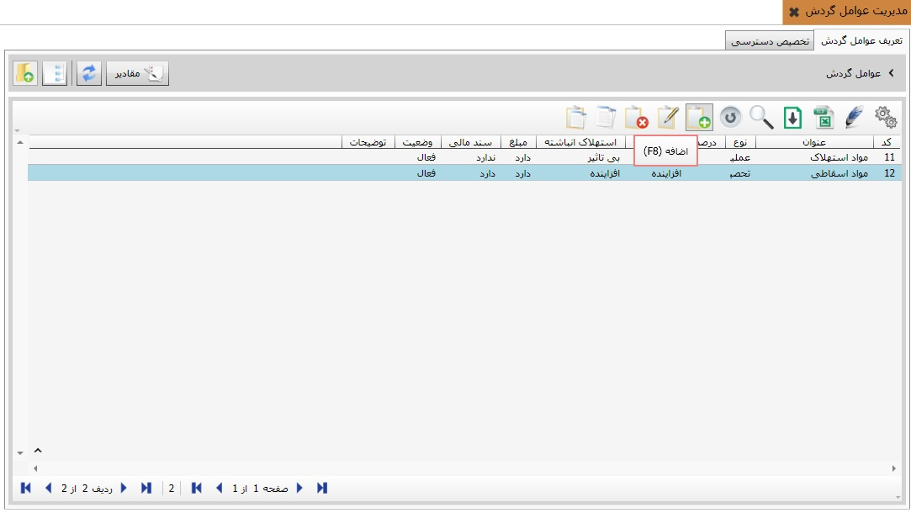
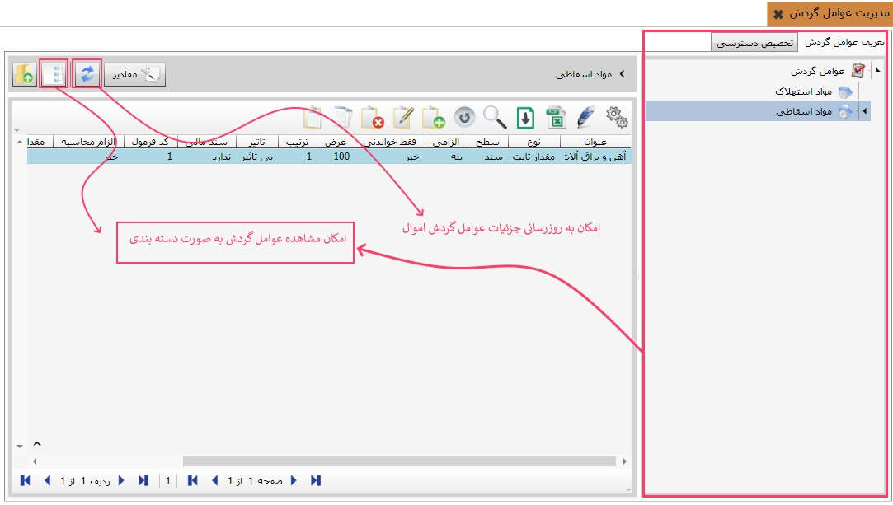
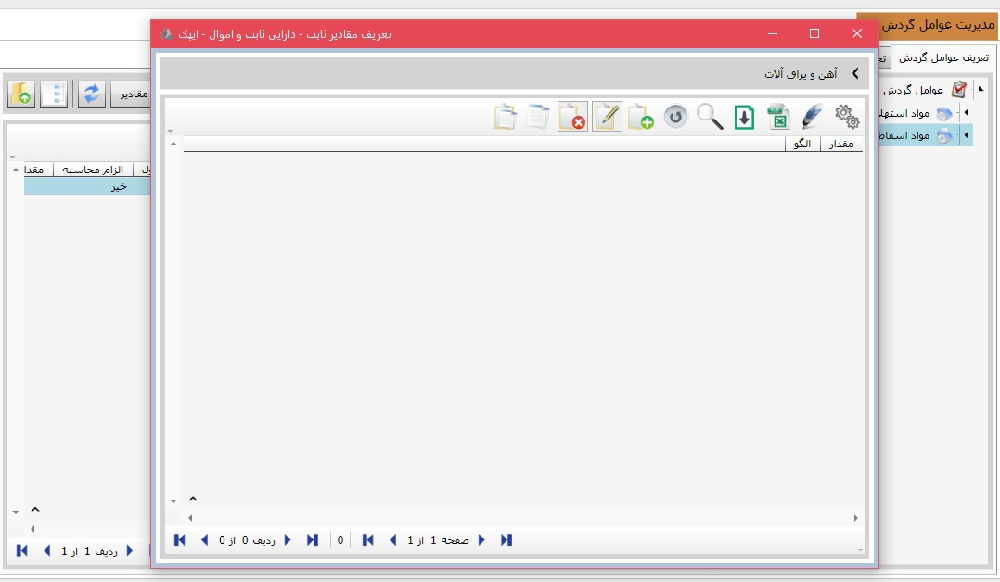
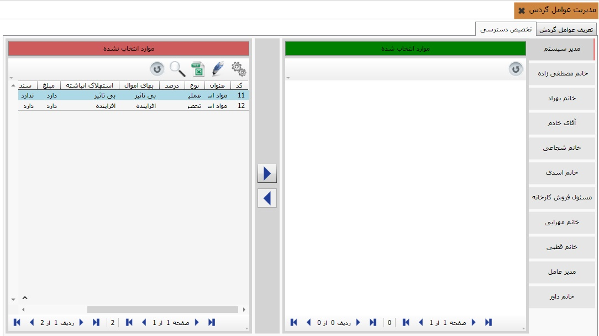

در این بخش امکان مدیریت عوامل موثر در ثبت و مدیریت اموال و دارایی ثابت پیاده سازی شده است. برای این منظور ابتدا به وسیله دکمه «اضافه F8» امکان افزودن دسته بندی های گوناگون مهیا شده است. همانگونه که در تصویر ذیل مشاهده می کنید.
برای تعریف مقادیر موثر در عوامل گردش لطفا برروی عنوان موردنظر کلیک و سپس دکمه مقادیر را کلیک نمایید. اکنون می توانید، تمام مقادیر موردنظر را در دسته بندی های دلخواه تعریف نمایید. علاوه بر آن می توانید به وسیله دکمه های «به روزرسانی» و «نمایش درختی» می توانید اطلاعات جزییات در عوامل گردش را به روزرسانی و یا به صورت نمایش درختی مشاهده نمایید.
لازم به توضیح است که امکان تعریف مقادیر ثابت از طریق دکمه «اضافه» امکانپذیر می باشد. برای این منظور کافیست دکمه مقادیر را کلیک کنید، سپس به وسیله «F8 اضافه»دکمه مقادیر ثابت موردنظرتان را تعریف نمایید.
برای تخصیص دسترسی کافیست از طریق دکمه های میانی اقدام نموده و موارد تعریف شده را به افراد موردنظر تخصیص دهید و یا بر اساس نوع کاربری محدود نمایید.
